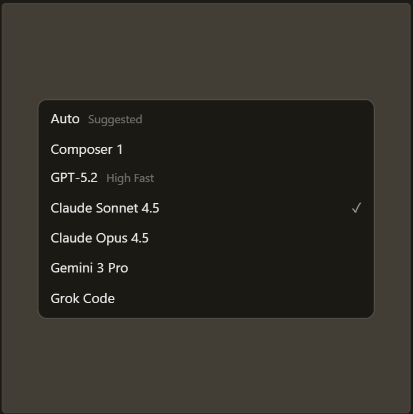

Built to make you extraordinarily productive,
Cursor is the best way to code with AI.
Download for Windows ⤓

Trusted every day by millions of professional developers.


Agent turns ideas into code
A human-AI programmer, orders of magnitude more effective than any
developer alone.
Learn about Agent →


Magically accurate autocomplete
Our custom Tab model predicts your next action with striking speed and
precision.
Learn about Tab →
Magically accurate autocomplete
Our custom Tab model predicts your next action with striking speed and
precision.
Learn about Tab →

The new way to build software.
It was night and day from one batch to another, adoption went from
single digits to over 80%. It just spread like wildfire, all the
best builders were using Cursor.
 Diana Hu
General Partner, Y Combinator
Diana Hu
General Partner, Y Combinator
The most useful AI tool that I currently pay for, hands down, is
Cursor. It's fast, autocompletes when and where you need it to,
handles brackets properly, sensible keyboard shortcuts,
bring-your-own-model... everything is well put together.
 Shadcn
Creator of shadcn/ui
Shadcn
Creator of shadcn/ui
The best LLM applications have an autonomy slider: you control how
much independence to give the AI. In Cursor, you can do Tab
completion, Cmd+K for targeted edits, or you can let it rip with the
full autonomy agentic version.
 Andrej Karpathy
CEO, Eureka Labs
Andrej Karpathy
CEO, Eureka Labs
Cursor quickly grew from hundreds to thousands of extremely
enthusiastic Stripe employees. We spend more on R&D and software
creation than any other undertaking, and there's significant
economic outcomes when making that process more efficient and
productive.
 Patrick Collison
Co‑Founder & CEO, Stripe
Patrick Collison
Co‑Founder & CEO, Stripe
It's official.
I hate vibe coding.
I love Cursor tab coding.
It's wild.
 ThePrimeagen
@ThePrimeagen
ThePrimeagen
@ThePrimeagen
I hate vibe coding.
I love Cursor tab coding.
It's wild.
It's definitely becoming more fun to be a programmer. It's less about digging through pages and more about what you want to happen. We are at the 1% of what's possible, and it's in interactive experiences like Cursor where models like GPT-5 shine brightest.
 Greg Brockman
President, OpenAI
Greg Brockman
President, OpenAI
Stay on the frontier
Access the best models
Choose between every cutting-edge model from OpenAI, Anthropic, Gemini, and xAI.
Explore models ↗

Complete codebase understanding
Cursor learns how your codebase works, no matter the scale or complexity.
Learn about semantic search ↗Develop enduring software
Trusted by over half of the Fortune 500 to accelerate development, securely and at scale.
Explore enterprise ↗
Changelog
2.4
Jan 22, 2026
Subagents, Skills, and Image Generation
CLI Agent Modes and Cloud Handoff
New CLI Features and Improved CLI Performance
2.3
Dec 22, 2025
Layout Customization and Stability Improvements
Cursor is an applied team focused
on building the future of coding.

Introducing Cursor 2.0 and Composer
A new interface and our first coding model, both purpose-built for working with agents.
Product·Oct 29, 2025
Improving Cursor Tab with online RL
Our new Tab model makes 21% fewer suggestions while having 28% higher accept rate.
Research·Sep 12, 2025
1.5x faster MoE training with custom MXFP8 kernels
Achieving a 3.5x MoE layer speedup with a complete rebuild for Blackwell GPUs.
Research·Aug 29, 2025